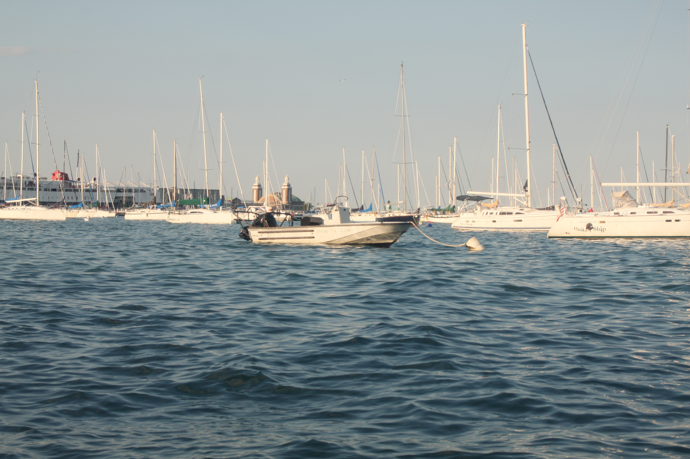
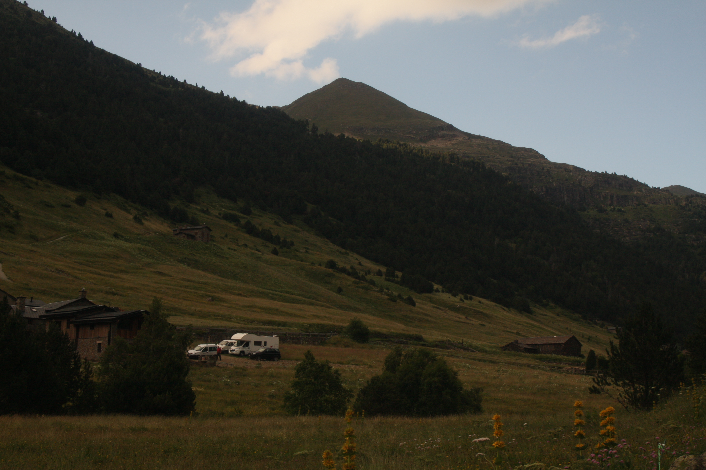
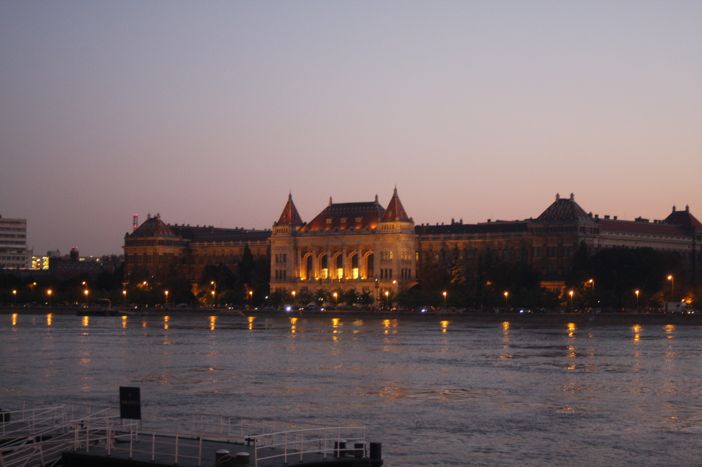
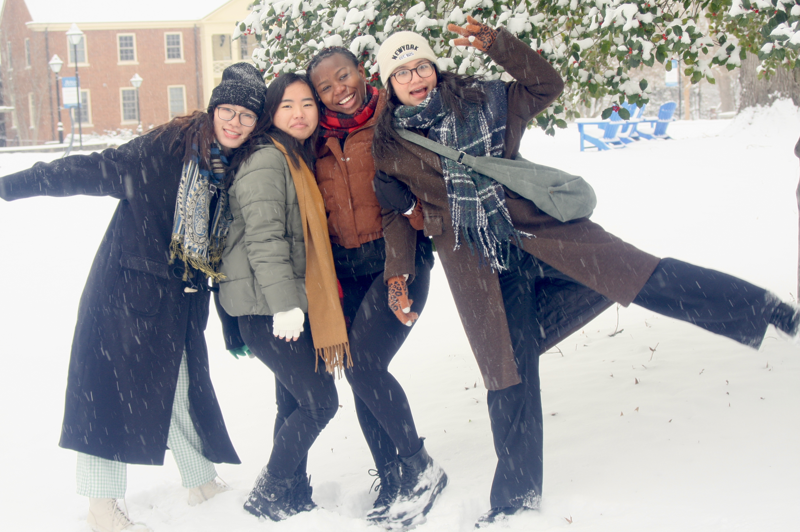
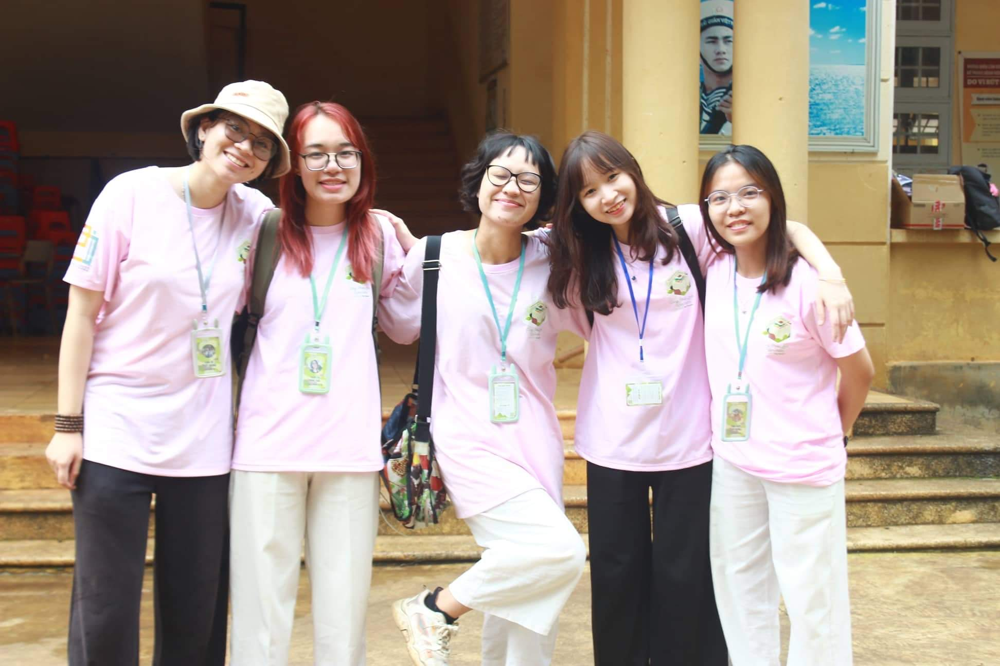
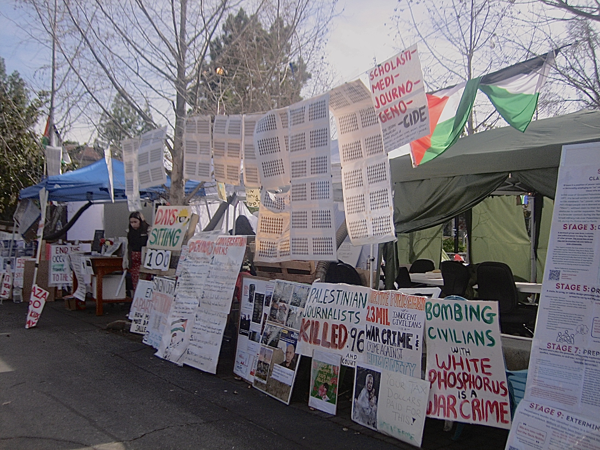

Beyond Work
Gallery










Poetry
Mưa rào
December 2025
Tôi ước mình là cơn mưa rào
Là dòng nước chảy qua vô giới hạn
Tia sét như tiếng lòng
Chờ đợi sự tinh khiết của mùa hạ
Tôi thấy mình gập ghềnh và bao la
Mỗi mùa đi qua tôi đều mong trở lại
Tôi chỉ mong xả mình ra
Nếu ai đó ngang qua
Người đó là người trong tim ta
Tôi thấy mình giống cơn mây mù
Sự đen đối đem lại niềm khao khát
Người ta mong bóng dâm
Tôi lại thích sự dồn dập
Ai che nắng che mưa
Còn tôi thì che trời che đất
Tôi vẫn là cơn mưa rào ngày đó
Ngày bạn ước sũng với tiếng cười
Ngọn gió cành cây còn chưa từng uỷ khuất
Sao tôi dám bàng hoàng
Rằng mình không tên không tuổi
Người ta yêu đời và so đo
Nhưng tôi sẽ luôn mong mình
Thiết tha và …
Lang bạc (Sleep on the floor Vietnamese translation)
November 2023
Em ơi nhặt lấy bàn chải đánh răng
Rồi gom vài chiếc áo em thích nhất
Cùng chạy ra ngân hàng
Lấy hết tiền tiết kiệm ra đi em
Bởi vì nếu còn chôn chân ở chốn này
Ta sẽ kẹt ở đây mãi
Mình sinh ra đâu phải để kẹt dưới đáy
Nên em ơi, đi thôi
Kệ đi những giáo điều
Ta chẳng phải bước ra từ tội lỗi
Nhớ nhắn nhủ vài dòng trước khi đi
Để mẹ biết rằng em vẫn ổn
Để khi bà vừa tỉnh giấc
Ta đã xuyên qua những miền xa lạ
Vượt lên cả những màn đêm
Em ơi, ta đi thôi
Khi ánh mặt trời lụi dần trên người anh
Và khi đường sụp, cây cầu vỡ
Liệu em có muốn buông tay chờ chết
Hay em sẽ chiến đấu đến cùng?
Nhìn ra ngoài kia đi em
Ta còn chẳng thấy bầu trời
Lấy chi tiền đâu mà sống
Đâu thể cứ nương nhờ bố mẹ mãi
Hay chắt chiu tằn tiệm
Rồi bấu víu vào cuộc đời tạm bợ
Anh đâu muốn sống như này mãi, em ơi
Kể cả khi mặt trời tàn lụi dần trên người anh
Hay khi thị thành này đổ vỡ
Chúa cũng sẽ chẳng cứu rỗi được anh đêm nay
Là chính mình đi thôi em
Đánh cược vào anh, đánh cược vào chúng ta
Ôi Illinois,
Kìa em ơi
Vơ lấy tạm chiếc bàn chải
Bỏ vào bộ quần áo em thích nhất
Mang hết tất cả mình có đi
Bởi vì nếu cứ chôn chân ở nơi này
Ta sẽ kẹt ở đây mãi
Đi với anh đi
Dẫu có phải lang bạc.
I am from
November 2022
I am from the sink
From my mother's broom and gloves
I am from the land of coal
(Dusty, foggy, and people never look at each other's eyes)
I am from Cerastium,
which I remember giving them to my crying long-gone childhood friend
I'm from the year of goat and hardworking holidays
From my uncle whose name is Five and Six is my aunt's name
I'm from the never-tell-me-what-you-really-feel and you're-on-your-own-now
From you're-so-smart and you-should-never-leave-this-town
I'm from worshiping my ancestor to the being-100%-atheist
I'm from Longan (a fruit)'s homeland and unkown Communist family (but not really).